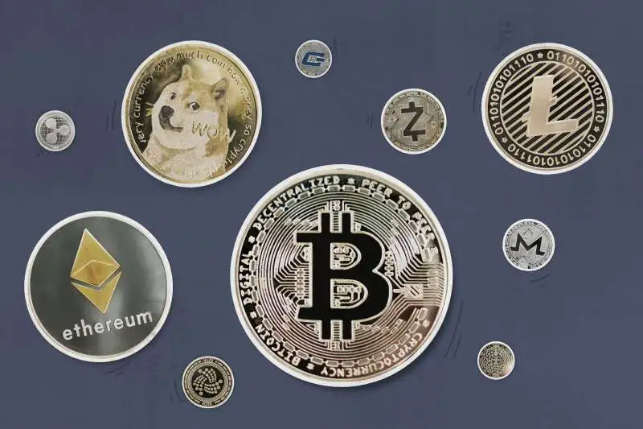
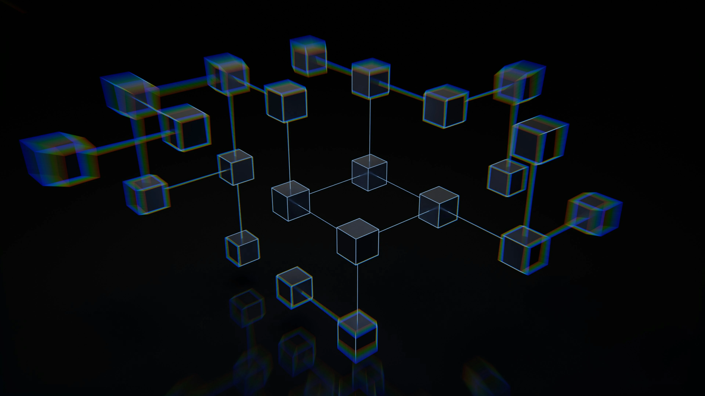
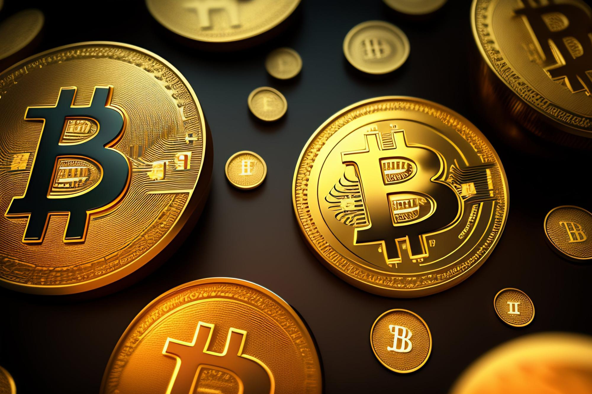
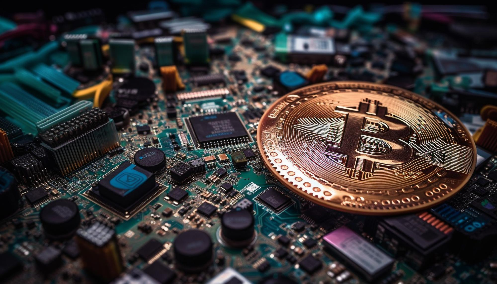

Apa itu Cryptocurrency?

Cryptocurrency adalah mata uang digital yang dibuat dan diamankan dengan kriptografi. Berbeda
dengan
mata uang tradisional yang dikendalikan oleh bank sentral, cryptocurrency beroperasi pada
jaringan
blockchain terdesentralisasi. Hal ini berarti tidak ada otoritas pusat yang dapat mengontrol
atau
memanipulasinya.
Bagaimana Cara Kerja Cryptocurrency?

Transaksi cryptocurrency dicatat pada buku besar digital yang disebut blockchain. Blockchain ini
tersebar di berbagai komputer, membuatnya aman dan transparan. Setiap transaksi diverifikasi dan
dikonfirmasi oleh jaringan, sehingga sulit untuk dipalsukan.
Jenis-Jenis Cryptocurrency
Ada ribuan jenis cryptocurrency yang tersedia, dengan yang paling terkenal adalah Bitcoin.
Berikut beberapa cryptocurrency populer lainnya:
- Ethereum (ETH): Platform terdesentralisasi untuk menjalankan aplikasi dan kontrak
pintar.
- Tether (USDT): Stablecoin yang dipatok dengan nilai dolar AS.
- Binance Coin (BNB): Cryptocurrency asli dari Binance, salah satu bursa cryptocurrency
terbesar di dunia.
- Solana (SOL): Platform blockchain yang berfokus pada skalabilitas dan kecepatan
transaksi.
- Cardano (ADA): Platform blockchain yang berfokus pada stabilitas dan keberlanjutan.
Manfaat Cryptocurrency

Cryptocurrency menawarkan beberapa manfaat, seperti:
- Transaksi yang cepat dan murah: Transaksi cryptocurrency biasanya lebih cepat dan lebih
murah daripada transaksi mata uang tradisional.
- Keamanan dan privasi: Cryptocurrency aman dan terdesentralisasi, sehingga sulit untuk
diretas atau dimanipulasi.
- Potensi keuntungan: Nilai cryptocurrency dapat berfluktuasi, tetapi juga menawarkan
potensi
keuntungan yang tinggi.
- Kontrol atas uang Anda: Anda memiliki kontrol penuh atas cryptocurrency Anda, tidak
seperti
mata uang tradisional yang dapat dikontrol oleh bank atau pemerintah.
- Akses global: Cryptocurrency dapat digunakan di mana saja di dunia tanpa perlu perantara
seperti bank.
Bagaimana Cara Memulai dengan Cryptocurrency?

Jika Anda tertarik untuk memulai dengan cryptocurrency, berikut beberapa langkah yang dapat
Anda
lakukan:
- Pelajari tentang cryptocurrency: Ada banyak sumber daya online yang tersedia untuk
membantu
Anda mempelajari tentang cryptocurrency.
- Pilih dompet cryptocurrency: Anda memerlukan dompet cryptocurrency untuk menyimpan koin
Anda.
- Beli cryptocurrency: Anda dapat membeli cryptocurrency dari bursa cryptocurrency.
- Simpan cryptocurrency Anda dengan aman: Penting untuk menyimpan cryptocurrency Anda
dengan
aman untuk menghindari pencurian.